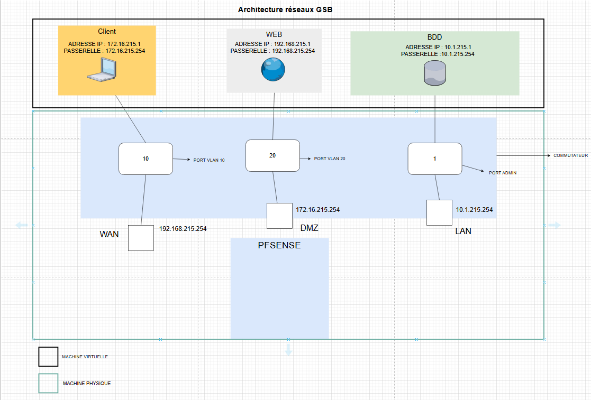
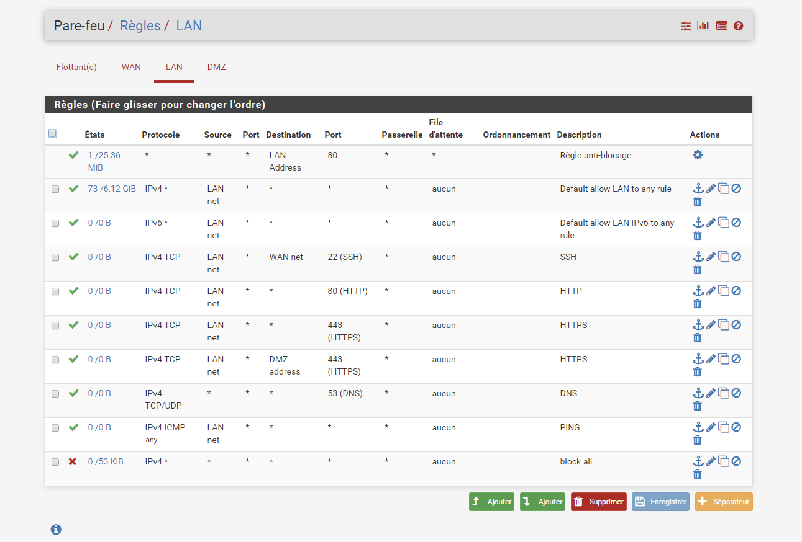

📍 Présentation
Ce projet a été réalisé en équipe dans le cadre de notre formation en BTS SIO option SISR.
L’objectif principal était de prendre en main un pare-feu pfSense dans un environnement structuré et adapté à la simulation d’un réseau d’entreprise.
Nous avons associé chaque composant du réseau (client, serveur web, base de données) à un VLAN distinct,
puis mis en place les règles de sécurité et de routage dans pfSense afin de contrôler les flux entre ces différentes zones réseau.
🧱 Architecture existante
- Infrastructure virtualisée sous VirtualBox
- VLAN Client pour les utilisateurs
- VLAN Web pour héberger le serveur web
- VLAN BDD pour la base de données
- pfSense en live utilisé comme pare-feu central

⚙️ Configurations réalisées
- Ajout de pfSense en tant que pare-feu entre les VLANs
- Création de règles pour bloquer ou autoriser les communications
- DHCP attribué automatiquement par pfSense pour chaque VLAN
- Accès à la base de données limité uniquement au serveur Web
- Analyse du trafic réseau via l'interface Web de pfSense
- Tests de sécurité sur les règles inter-VLAN

🛠️ Outils utilisés
- pfSense (iso)
- VirtualBox
- Interface graphique pfSense (GUI)
✅ Résultats
- Flux réseau filtrés avec précision entre les VLANs
- Compréhension du fonctionnement des pare-feux et des règles
- Renforcement des bonnes pratiques de sécurité réseau
- Travail collaboratif et partage des responsabilités